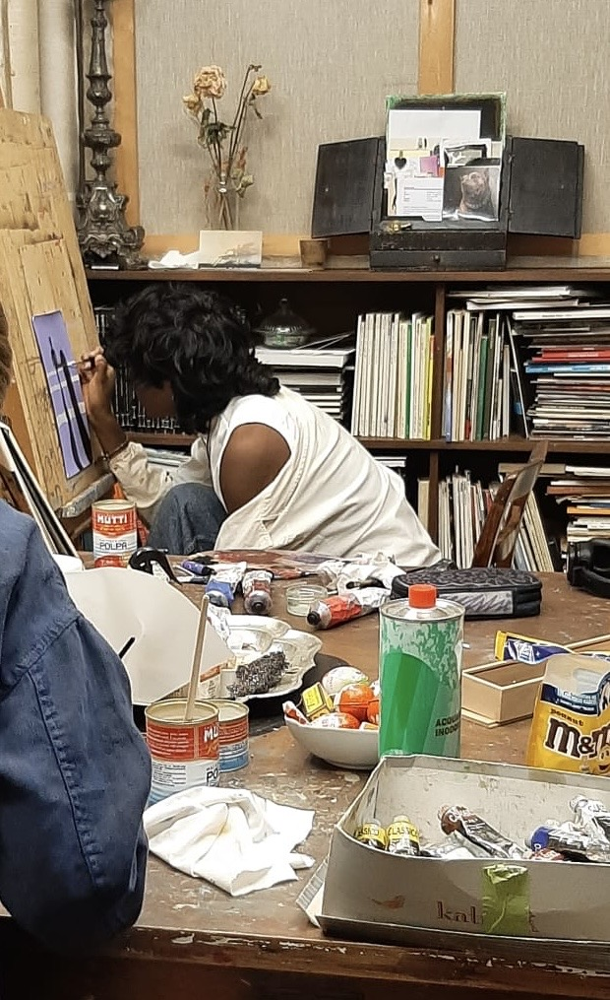
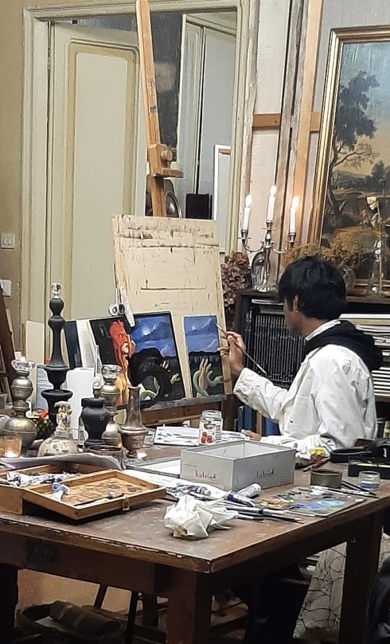
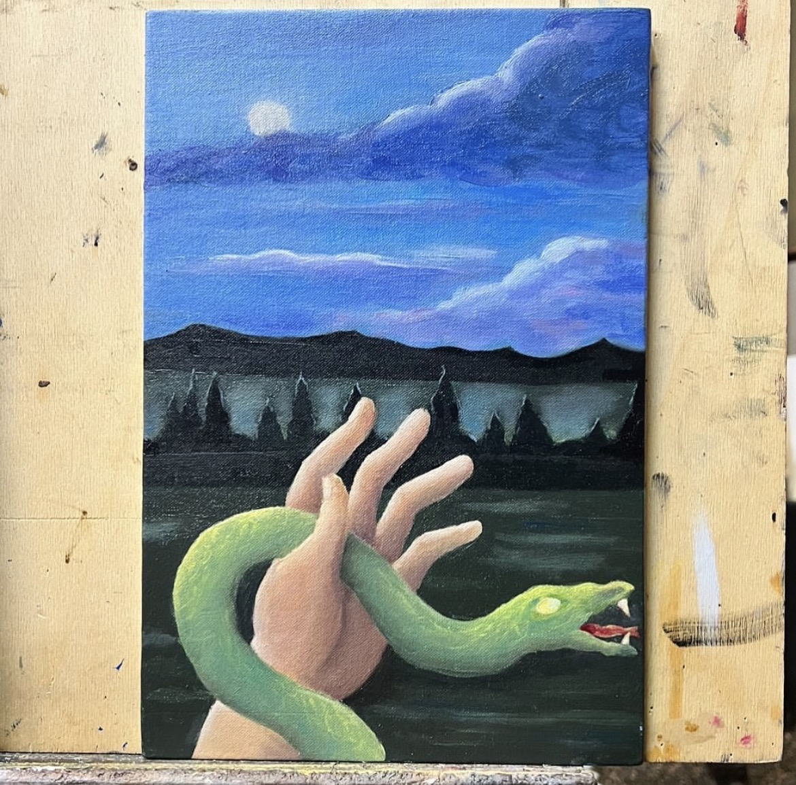
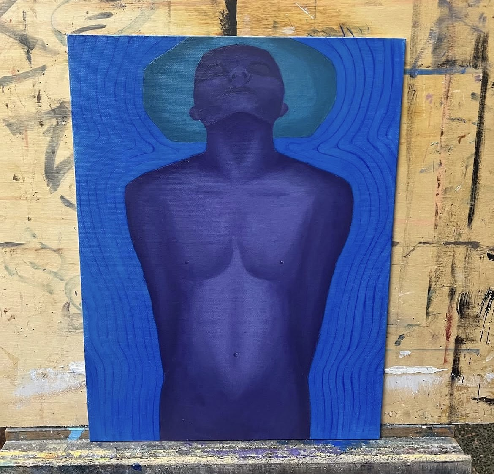
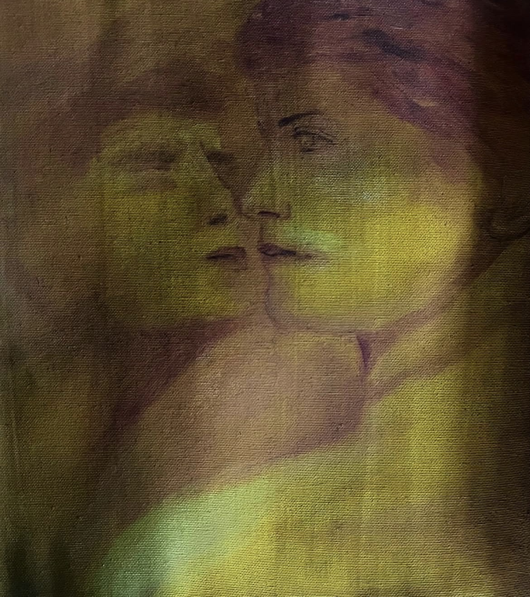
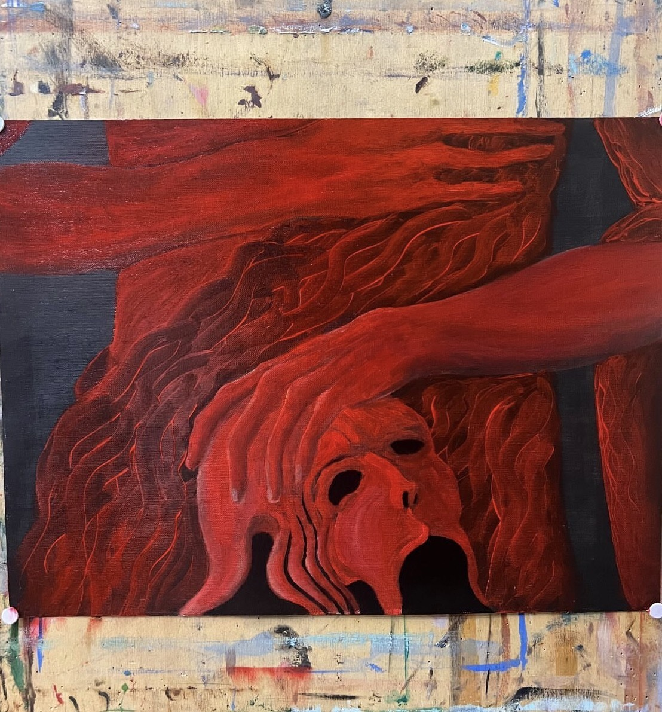
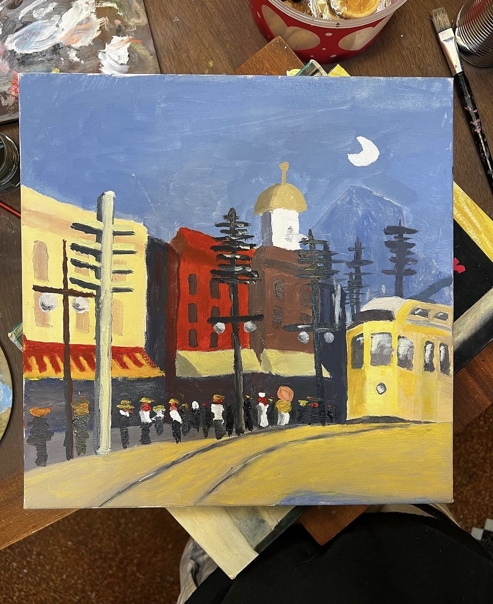

Capolavoro: Corso di Pittura e Disegno
Durante l'inizio dell'anno scolastico ho frequentato un corso di pittura dall'insegnante di nome Renata Soro, che lavora nell'campo dell'arte visiva e fa corsi liberi.
In questo corso ho imparato varie tecniche utilizzando matita o carboncino, pittura ad acrilico e pittura ad olio, approfondendo la tecnica del colore e della prospettiva, inoltre approfondendo anche alcuni artisti del passato e più contemporanei.



Ho scelto di indicare questo corso come capolavoro perchè è stato fondamentale per il mio orientamento verso la mia scelta per l'università, dato che il prossimo anno vorrei frequentare l'accademia delle belle arti, facendo prima il diploma di primo grado in didattica dell'arte e successivamente il diploma di secondo grado in pittura, puntando a fare i concorsi per diventare professore di storia dell'arte e disegno.




